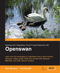

|
I heartily endorse
this gigantic book! |
 |
This webpage contains information on how to use L2TP/IPsec clients from Microsoft, Apple and other vendors in a 'Road Warrior' setup connecting to a Linux VPN server based on FreeS/WAN or its successors. FreeS/WAN is an IPsec implementation for Linux 2.x kernels, released under the GNU Public Licence. FreeS/WAN has been succeeded by Openswan and strongSwan. The main advantage of such a setup is cost: if you use the free clients that are included with Windows and Mac OS X, you don't have to spend money on third-party VPN clients or servers. Obviously you still need OS licences for those clients if you want to be legal.
IPsec
is a network protocol for secure communication. It's an official
Internet standard. Clients and devices from different vendors should
interoperate (in theory), as long as they adhere to the IPsec standard.
More background information on IPsec can be found in this illustrated
guide to IPsec. The following L2TP/IPsec clients are supported by
the setup described
on this webpage:
| Windows 2000 and Windows XP | Using
a Linux L2TP/IPsec VPN server with Windows 2000/XP |
| Windows Vista |
Using a Linux L2TP/IPsec VPN server with Windows Vista |
| Windows 95 / 98 / Me / NT4 | Using a Linux server with the Microsoft L2TP/IPSec VPN Client |
| SSH Sentinel, Forticlient and SafeNet SoftRemote | Using a Linux server with third-party L2TP/IPsec clients |
| Windows Mobile 6, Windows Mobile 5.0 and Pocket
PC 2003 |
Using a Linux L2TP/IPsec VPN server with Windows Mobile |
| Mac OS X v10.3 Panther and higher |
Using
a Linux L2TP/IPsec VPN server with Mac OS X |
| Linux |
Using Linux as an
L2TP/IPsec client |
Windows 2000/XP/Vista, Pocket PC 2003, Windows Mobile and Mac OS X
v10.3+
ship with a
built-in
L2TP/IPsec client. The "Microsoft L2TP/IPSec VPN Client" for Windows 95
/ 98 /
Me / NT4 is a free download from the Microsoft website. For
brevity, I call it the "MSL2TP client" below. SSH
Sentinel, Forticlient and SafeNet SoftRemote are third-party clients
for Windows
that support both IPsec and L2TP.
| Kernel 2.0 KLIPS |
Kernel 2.2 KLIPS |
Kernel 2.4 KLIPS |
Kernel 2.4 NETKEY backport 1) 2) |
Kernel 2.6 KLIPS | Kernel 2.6 NETKEY 1) |
|
| FreeS/WAN 1.x |
X |
X |
X |
|||
| FreeS/WAN 2.x | X |
X |
X |
X |
||
| Openswan 1.x | X |
X |
X |
|||
| Openswan 2.x | X |
X |
X4) |
X |
||
| strongSwan 2.x |
X |
X |
||||
| ipsec-tools utilities 3) |
X |
X |
||||
| isakmpd Linux port |
X? |
X? |
1.2 Results
The following Windows L2TP/IPsec clients have been tested:
Linux can connect as an L2TP/IPsec client to other
L2TP/IPsec servers. See also this webpage.
All clients mentioned above support some form of NAT-Traversal. Note
that you may
need to obtain the latest
version of your client to actually get the NAT-T support. Although
NAT-T is
supported by these clients, it may not always work when you connect to
a
Linux IPsec
server.
Some
of the clients have been tested successfully, others do not work yet
(this is discussed below).
1.3 Commercial products with L2TP/IPsec
Here is a list of L2TP/IPsec server products, in case you
rather buy something off the shelf. Most of these are closed source, so
you may have to pay for user licences. See also this feature
chart on the VPNC website. (The list below does not imply that
these products have been tested against Linux L2TP/IPsec).
1.4 Non-commercial and Open Source products with L2TP/IPsec
1.5 Author
The author of this document is Jacco de Leeuw. Corrections, additions, extra information etc. are much appreciated. A big thank you to everybody who has provided feedback!
Microsoft has included an IPsec client with Windows 2000 Professional / Server, Windows XP Home / Professional, Windows Vista, Pocket PC 2003 and Windows Mobile. The client is supplied with the base operating system so you do not have to download it. See also my other webpages.
A separate IPsec client can be downloaded for free from the Microsoft website. This 'MSL2TP client' can be installed on Windows 95 / 98 / Me / NT4. Although the client is different from the one included with Windows 2000/XP/Vista, it is quite similar in functionality. For more information on the MSL2TP client, see my webpage "Using a Linux server with the Microsoft L2TP/IPSec VPN Client".
As far as I know, there is still no Microsoft client for Windows 3.x, Windows NT 4.0 Server and Pocket PC versions 2002 and older. But there are third-party IPsec clients on the market. For non-commercial use you can download the free PGPNet, but it is is limited to host-to-host connections.
There is however a snag with the free IPsec clients from Microsoft. You can use IPsec only in combination with another protocol called L2TP. It is fairly difficult (2000/XP/Vista) or probably even impossible (MSL2TP, Pocket PC) to get rid of this L2TP requirement. One might say that Microsoft "embraced and extended" the IPsec standard, in true Microsoft fashion. To be fair though, L2TP is currently a 'Proposed Internet Standard' (RFC 2661 ) and so is 'L2TP over IPsec' (RFC 3193). PPTP, on the other hand, is another widely used VPN protocol but it is not an official standard.
The use of the L2TP protocol means that you will have to use an L2TP daemon. Several L2TP daemons are available. I will come to that later. When a Windows L2TP/IPsec client connects to your Linux server, it first sets up an IPsec tunnel to Openswan. Then it uses the tunnel to connect to the L2TP daemon on the Linux server, after which the client can access machines on the internal network.
There is an alternative option if you happen to have a Windows 200x Server. With the L2TP/IPsec client you connect to the Linux IPsec server and then use that IPsec tunnel to connect to the L2TP server of Windows 200x, instead of Linux. Martin Köppe has written a Howto on this. The advantage would be that Microsoft's L2TP server is presumably more compatible with the Windows clients than the Open Source L2TP daemons. Note that with this setup the Windows 200x Server is not directly connected to the Internet: the Linux server is. One might regard this a security advantage. Users are authenticated through PPP against Windows 200x instead of Linux, so you will need Client Access Licences.
Microsoft apparently does not think that IPsec is a good protocol for authenticating teleworkers ("Roadwarriors"). This is a bit odd, because third-party clients (PGPNet, SoftRemote etc.) have absolutely no problem with it. Microsoft's rationale is stated on their website in a VPN FAQ. Basically, they claim that passwords are easier to use than certificates. But I suspect there might be another tactical decision behind this. The L2TP protocol supports additional authentication mechanisms which apparently suit Microsoft better (e.g. authenticating through the Windows logon credentials, which means selling more NT/200x client licences).
Read this part carefully. If you have just started reading this page you don't have to take immediate action. Just keep it in the back of your mind and remember to come back to it when you have got the whole lot working and you are about to hook it up to a hostile network such as the Internet.
5.1.1 Ports to open on the external interface: IPsec
You are probably using a firewall on your VPN server (or in front of
it). In that case you will need to adjust
your
firewall so that the L2TP/IPsec protocol is allowed in.
There are many different types of firewalls on Linux. There are even
differences between
versions of the same Linux distribution. Many people prefer to use
their own custom
firewall rules instead of those of the distribution. I'm afraid it is
impossible for me to provide specific instructions for each and every
type of firewall. See also the FreeS/WAN
documentation.
For L2TP/IPsec you need to open the same protocols and ports
as for
pure IPsec:
Note that IP 50 is a protocol, not a port. As you
might know, IP has
protocols such as ESP, UDP and TCP. The protocols TCP and UDP on their
turn have ports such as TCP 80 (HTTP), UDP 500 (IKE) etc.
5.1.2 Ports to block on the external interface: L2TP
You should firewall the L2TP daemon on the external (hostile)
interface so that it is not accessible. Or better said: you MUST
firewall the L2TP daemon, otherwise you will be taking a huge risk.
So for L2TP/IPsec you need to firewall the following port
on all
interfaces except ipsec0 (or eth0 if you are
using NETKEY instead of KLIPS):
5.2.1 The listen-addr parameter (KLIPS
only)
In addition to firewalling L2TP, here is another suggestion which
makes your setup even more secure. This step is described in the
following paragraphs. By default the L2TP daemon listens on UDP port
1701. Should your firewall be down (for some reason), the L2TP daemon
would be exposed on the external interface. So you do not want anyone
to access the L2TP daemon through the VPN server's external interface.
What you want is that only IPsec authenticated clients are able to
access the L2TP daemon, i.e. L2TP packets should flow through the IPsec
tunnel and not directly (unencrypted) between the server and the
clients. However, by default the L2TP daemon listens
on all
interfaces, even on the external (hostile) interface. It binds to INADDR_ANY
(for those in the know). Preferably you would like the L2TP daemon to
bind to only the ipsec0 interface. Unfortunately, this is not
possible. Unlike low-level network applications such as tcpdump and
Ethereal you cannot bind the L2TP daemon to a particular interface.
Fortunately, there is a way to bind the L2TP daemon to a particular IP
address. Patches are available for two of the major Open Source
L2TP daemons (l2tpd
and rp-l2tp) which
allows the server to bind (listen) to one particular IP
address.
This listen-addr
patch for l2tpd is included in my l2tpd RPM
(from version 7jdl and up). To use this patch you add a
parameter "listen-addr
192.168.1.98" to the L2TP
daemon's configuration file (l2tpd.conf). The daemon will then listen
on the IP address 192.168.1.98 (the internal interface in my
example configuration).
So now you have an L2TP daemon listening on the internal interface.
The daemon cannot be accessed from the external interface, which is
good. But the L2TP daemon should be accessible through the ipsec0
interface. This is done by configuring an iptables
rule which forwards L2TP packets coming from the ipsec0
interface to the internal interface:
|
|
(Where 192.168.1.98 is again the IP address of the
internal
interface). The rule is deleted with:
|
|
Openswan must be running when you execute these lines, i.e. ipsec0
must exist. Alternatively, you could add these extra rules to a
firewall script called by Openswan, namely the one specified by the leftfirewall=
parameter. See also the FreeS/WAN
documentation on this.
5.3 ip_forward
One other security related point to notice is that people often set /proc/sys/net/ipv4/ip_forward
to 1 for (VPN enabled) routers, so that packets coming from
the
IPsec tunnel are forwarded to the internal network. This can be done by
adding forwardcontrol=yes to ipsec.conf. However,
there are some security implications. Perhaps one or more iptables
forward
rules
could do the same trick, when restricted to certain interfaces. Or
you
could use iproute2
(advanced routing). This is a bit outside the scope of this document.
5.4 chroot, UML, XEN, SELinux etc.
Both Openswan and l2tpd run as root. For extra security you could
try to shoehorn them into a chroot jail or an SELinux policy.
Or you could even virtualise your server with Usermode Linux, Xen, etc.
I have not
attempted to do this but apparently the people at Astaro have managed to run the
L2TP/IPsec server in chroot. You could
download an
evaluation copy and check out how they did it. A commercial product
that uses virtualisation to support multiple L2TP/IPsec tunnels is Stinghorn. Red Hat / Fedora
appears to have a default SELinux policy but it is for racoon, not
Openswan.
Before I dig into the technical details of setting up Openswan with L2TP, let's take one step back. I assume that you are interested in providing remote access over the Internet to your users. Important factors in this are price, security and user friendliness and often you can only pick 2 out of these 3 factors. Several solutions are available, such as:
Ad 6.1: These are hardware devices with PPTP/IPsec support such as those from Checkpoint, Cisco, Draytek or Netscreen. Hardware devices are easy to configure for the user (because the system administrator does it for them :-). The hardware box is then handed in person or shipped to the user. Another advantage is that most of these devices also contain a firewall. Security of hardware devices is fairly high. Some hardware devices can be centrally managed. A disadvantage is the price, which tends to be higher when the device has more VPN capabilities. Hardware boxes are also not very portable so they are less suitable for roaming users. Another problem (the classic hardware/software trade off) is that they may be difficult to extend with new features. Many hardware devices only support Preshared Keys (i.e. passwords) and not certificates. But Netscreen and SnapGear do support certificates. If the hardware device only supports Preshared Keys, the user is required to have a fixed IP address, unless the device also supports Aggressive Mode.
Ad 6.2: PPTP is free and easy to use but
that's about it, really. PPTP clients are included with Windows 98 and
higher. Updates (including a version for Windows 95) are available for
free from the Microsoft
website. PPTP clients are available for other operating systems as
well, including BSD, Linux and Mac. An advantage of PPTP is that it
supports NAT-Traversal, i.e. it can get through (most) devices that
employ Network Address Translation (NAT). Microsoft claims that PPTP
has
a "good
level of security that is suitable for most companies". Security
professionals such as Bruce Schneier think otherwise. A German
student managed to crack
PPTP passwords in 4 hours. Asleap
by Joshua Wright has been extended to crack weak PPTP passwords. The
authors of the premier Open Source PPTP implementations PPTPClient and Poptop recommend against
using PPTP. Others
have found a flaw in
Microsoft's PPTP implementation. Even Microsoft now admits that "as a VPN
protocol, Microsoft considers PPTP to be non-strategic". Note also
that PPTP is not an
official Internet standard. It is an 'de-facto industry standard' set
by
Microsoft. From Microsoft's VPN
FAQ mentioned above you might easily get the impression that their PPTP and MS-CHAPv2 protocols are
official IETF standards. This is not the case. You can check that on the RFC website.
It's even mentioned in the RFCs themselves: "[This RFC] does not
specify an Internet standard of any kind". Those two RFCs have
never
been ratified as official standards. They expired. Quoting the Internet RFC FAQ: "Unscrupulous
marketeers and a careless trade press sometimes falsely suggest that
every RFC represents a standard, or that all standards have equal weight".
PPTP also supports the MPPC compression protocol which is patent
encumbered. So is PPTP proprietary? Microsoft
says no, but they are not telling the whole story. Microsoft has
developed yet another proprietary VPN protocol called SSTP. It is included with
Windows Vista SP1 and Windows Server 2008. Other operating systems are
not supported. SSTP is based
on SSL and should be able to pass through most routers, unlike the GRE
protocol used in PPTP which is sometimes blocked by routers.
Ad 6.3: Remote desktop clients and servers often use proprietary protocols (VNC and NX are the exceptions). Effectively, this is "security through obscurity". Security experts generally don't like this concept. There is often little encryption (VNC) or the protocol is vulnerable to a Man-In-The-Middle Attack (VNC, RDP). Prices can also be fairly steep (Citrix, GoToMyPC, pcAnywhere). Again, VNC is the exception because it is open source. Windows Terminal Server (RDP) requires extra client licences (CALs). Remote desktop clients such as VNC and pcAnywhere only support one user per system.
Ad 6.4: SSL-based VPNs are very flexible to set up. In many
cases the only requirement is that the user must have a recent browser.
The user will have to surf to a certain website and then a special
client will be downloaded automatically using Java or ActiveX. This
means you will have to maintain and administrate a webserver connected
to the Internet. Note that in principle the user can connect from
anywhere, even dubious locations such as airport kiosks, Internet
cafés
etc. Once the client software has been downloaded, the user is
presented
with a remote desktop (similar to 6.3). In some products, the client
will switch to a proprietary protocol (HOB,
Windows
TS ActiveX). Other products continue to use SSL for the remote
desktop part (Citrix
Secure Gateway?). SSL is used for downloading the applet and the
remote desktop protocol itself. Proprietary protocols may be faster but
SSL is a well-understood and open standard, so it is probably more
secure than a vendor-specific protocol. Windows Vista SP1 ships with a
SSL VPN called SSTP.
SSL Explorer
is
the world's first open-source, browser-based SSL VPN solution.
Commercial vendors are Aventail,
F5 FirePass, Neoteris and Netilla (server appliance based on Tarantella). A disadvantage is
that SSL based VPNs do not support all applications (compared to full
blown VPNs such as PPTP/IPsec). For instance, one could argue that Outlook
Web Access is also an SSL based VPN but you can use it only to
access Exchange Server. Another disadvantage is that you will have to
secure the special website and keep it locked down. Or, if you use an
appliance, you better not forget to install security updates from the
vendor.
Ad 6.5: There are also some other non-standards based Open
Source solutions such as CIPE, vtun, tinc and OpenVPN. OpenVPN seems to be
promising
(based on OpenSSL, runs in user-space, is relatively lightweight,
supports compression, simple-to-use and runs on 7 different OS's
including Windows) but the others have serious
security problems, according to security expert Peter Gutmann.
Ad 6.6: There are a few proprietary solutions of which Hamachi is an example. Hamachi is freeware and claims to be very easy to use ("zero-configuration"). It even works without change when both sides of the VPN are behind NAT. Although the makers of Hamachi have released some details about its protocol, it is still proprietary and a trade secret and thus has not seen any peer review by professional cryptographers. Source code is not available so you cannot fix bugs yourself, or add any new features and when there is no version for your operating system of choice, you are out of luck. Hamachi uses a central "mediation" server operated by the makers of Hamachi. All clients regularly communicate with this server.
Ad 6.7: A freeware IPsec client is available for Windows 2000/XP: the Shrew Software VPN Client. It has been tested with ipsec-tools based Linux VPN servers, but it works with Openswan/strongSwan as well. Alternatively, several vendors sell third-party IPsec clients: McAfee VPN client, NCP Secure Entry Client/Secure VPN/PKI Client (Openswan interop Wiki), PGP Mac VPN client, SafeNet SoftRemote, SSH Sentinel, Forticlient, TheGreenBow VPN Client. For a more complete list, see Openswan's interoperability overview. These clients generally have a lot of features, e.g. support for AES (a fast encryption standard). However, you will have to pay for these clients. This has the advantage that you receive support from the vendor, depending on your support contract. SSH Sentinel 1.2 "Internetpilot" (old and buggy) and PGP are free for non-commercial use.
Ad 6.8: By default, the IPsec clients included with Windows 2000/XP/Vista, Pocket PC and Mac OS X v10.3+ can only be used for tunnelling L2TP. You might want to get rid of L2TP, so that you don't have to install an L2TP daemon on your Linux server. This leaves you with 'pure' IPsec. Unfortunately, this is very difficult to do manually. You can find an example for Windows 2000 Professional on the Snapgear website. This is hardly user friendly by anyone's standards. As if Microsoft wanted to discourage pure IPsec without L2TP. Another drawback is that you will need Administrator privileges to change the IPsec settings using MMC. Note also that this VPN option is only available for Windows 2000, XP and Vista. The MSL2TP client and Pocket PC cannot be configured for IPsec without L2TP (as far as I know). In other words, if you have Windows 9x/Me/NT or Pocket PC, you will have to choose one of the other VPN options, possibly buying a third-party client (see option 5). This means you will have to support not one, but two different VPN options...
Ad 6.9: Fortunately, there are tools
(wrappers around the built-in IPsec client). Two popular tools are
available: the Linsys
IPsec Tool (lsipsectool) and IPSEC.EXE
by
Marcus
Müller. They do the configuring for you when you
want to use Windows
2000/XP without L2TP. Like the previous VPN option, Administrator
privileges are required to run the IPSEC.EXE utility, but you can
get around this if you are prepared to run IPSEC.EXE as a Service (see this
post by Uwe Knop). You will have to distribute the Linsys tool or
the IPSEC.EXE
program
to your users, together with a configuration file and the user's
private
key and certificate. The configuration file resembles a Openswan
config
file, so you could even generate it on your Linux server. Nate Carlson
has made an excellent webpage with instructions on using Windows
2000/XP with Openswan. There are also several graphical front-ends
for the IPSEC.EXE utility available. There is also a free GUI that
works similar to these graphical IPSEC.EXE wrappers: the Securepoint
Personal Firewall & VPN Client. If you use Mac OS X v10.3+
instead of Windows, then there are similar
programs
available as well. Note that
the MSL2TP client cannot be used with this option. It cannot be
configured to
get rid of L2TP, so you'll have the same MSL2TP related problem as with
option 6.7.
Ad 6.10: I will go into more details below, as L2TP over IPsec is the main topic of this page. One thing is certain, though: you will have to use an L2TP server on the Linux side.
Here are the advantages and disadvantages of using IPsec with L2TP.
Pros:
A Preshared
Key is a secret password that is shared by both sides of the
IPsec
tunnel. Preferably, the PSK is distributed 'out-of-band', i.e. not over
the hostile network (read: the Internet). For instance, you could meet
the user face to face and hand him the PSK on a piece of paper. PSKs
are
fairly simple to use, but they do not scale very well with the number
of users and if you want
to
use a PSK in a Road Warrior setup, all users with dynamic IP addresses
will have to share
the same PSK ("group secret"). This is of course a significant
security risk: if one
user
leaves the company or loses his laptop, all the other users will have
to
get
a new PSK. The alternative would be to give every user a different PSK,
but this is only supported in IPsec if all users have fixed (= static)
IP addresses. Because of this limitation PSKs are generally not used in
Road Warrior setups, unless there is only one user or everyone has a
static IP address (e.g. home workers with cable or ADSL).
With RSA
authentication you specify the raw RSA public key of the user
in
the Openswan configuration. RSA authentication supports both static and
dynamic IP addresses. RSA authentication is also relatively
light-weight
to implement and almost as easy to use as a password. RSA keys have the
advantage that they are inherently more secure because passwords can be
guessed. Unlike passwords, RSA keys cannot be remembered by the user.
They will have to be cut and pasted into the configuration.
Unfortunately, none of the IPsec clients that support RSA
authentication
seem to support L2TP/IPsec, and vice versa.
Some IPsec clients support Aggressive Mode. This allows them to use PSKs with dynamic IP addresses. Especially clients for devices with relatively little processing power such as Pocket PC and Palm use Aggressive Mode, because RSA encryption is much slower than symmetric key encryption. There is a patch for FreeS/WAN that adds support for Aggressive Mode. This patch is also included with Openswan 1.x and SuperFreeS/WAN. The trouble with Aggressive Mode is that security depends on the strength of the password itself (PPTP has the same problem). There are programs such as IKEcrack and Cain&Abel that attempt to crack the Preshared Key from intercepted sessions, as explained by Michael Thumann.
XAUTH (Hybrid Mode) is an extension to IPsec that was never ratified by IETF because it required changes to the (already complex) IKE standard. Cisco seems to be a big XAUTH proponent. XAUTH is not supported by FreeS/WAN or strongSwan, but there is an implementation in Openswan (disabled by default; requires a recompile). Philippe Sultan demonstrates that the XAUTH username and password can be obtained using a spoofed server if the Preshared Key is already known. That Preshared Key can be obtained through brute-force cracking (as mentioned in the previous paragraph) or by copying from the client itself (disk or memory). A solution to this problem is to switch to Cisco's Mutual Group Authentication (server certificates and client passwords; currently only available for Cisco VPN Concentrators, not IOS) or to use certificates (requires client passwords and both client and server certificates, but the client certificates can be 'junk' so a full PKI can be avoided).
DHCP-over-IPsec is supported by Openswan but there is very
little client support. The only Windows client is currently SSH
Sentinel but this product has been discontinued. (Note: this is not the
same as DHCP Inform, which is essentially
DHCP-over-PPP-over-L2TP-over-IPsec).
IKEv2 is a successor to the current IKE. It will support
'legacy'
authentication modes such as passwords through EAP. IKEv2 is expected to
become
the main standard. StrongSwan
already supports IKEv2 and other implementations are under development.
X.509 certificates are supported by almost all L2TP/IPsec
clients. Openswan supports it too, courtesy of a patch
by Strongsec. Certificates are generally considered the way to go
for Road Warriors. The disadvantage is that you will need to set up
some
kind of Public Key Infrastructure (PKI), which may be an administrative
burden. You need to generate, distribute, revoke etc. the X.509
certificates for the Openswan host and the L2TP/IPsec clients. More
information can be found in this section on
certificates.
Other IPsec authentication methods such as AuthIP, CRACK, HYBRID, Kerberos and PIC exist as well, but currently there are no implementations available for Openswan or any other Linux IPsec implementation (as far as I know).
Here are the components to be used at the server side.
Red Hat 9 and previous versions
are no
longer supported by Red Hat. Fedora 4 and previous version are
also no longer supported by the Fedora Project. The Fedora Legacy Project
has been discontinued so there are no more security updates for these
old versions. There are also other alternatives
if you use an old Red Hat version. MandrakeLinux 10.0 and older are no longer
supported by Mandriva. SuSE 8.0 and older are no longer supported.
Obviously it does not make much sense to run
a VPN
server on an old distribution with unpatched vulnerabilities. The VPN
part may be highly secure but it won't help much if you are using, say,
a vulnerable kernel. This means that I won't be releasing updated RPMs
for Mandrake 8.x and Mandrake 9.0. (Also from a practical
standpoint: they simply had to make room for newer distributions on my
systems). Of course you should be able to compile the Source RPM
yourself if there is no RPM available for your distribution.
Red Hat does not include Openswan's KLIPS in Red Hat Linux or Fedora. They prefer to use the native IPsec implementation (NETKEY). This implementation is included in Fedora Core 2 and higher and RHEL. You will also need Openswan userland utilities to use NETKEY. Openswan RPMs are included in Fedora Core 3 and higher. RPMs are also available from the Openswan website, Axel Thimm's website and Dag Wieërs website.
FC 2 and later (and quite possibly also RHEL) do not contain 'Legacy (BSD) PTY support' (CONFIG_LEGACY_PTYS=y), in contrast with previous FC and Red Hat versions. You will need to use l2tpd RPM version 11jdl or later. These versions use the new(er) Unix98-style pty system instead of the legacy BSD-style pty system. L2tpd version before 11jdl will not be able to start pppd and abort with the error message "getPtyMaster: No more free pseudo-tty's". An alternative is to switch from l2tpd to another L2TP daemon such as rp-l2tp.
If you use Red Hat Enterprise (RHEL) or clones such as CentOS, Lineox, Tao Linux, Whitebox Linux or X/OS Linux then I don't have much advice because I do not have these installed myself. It seems that they use the backported NETKEY implementation for kernel 2.4. Openswan RPMs for RHEL are available on the Openswan website.
According to Paul Wouters of the Openswan team, RHEL 3 (and its derivatives such as CentOS 3) "is the worst choice for a kernel for IPsec related matters" because its kernel is a 2.4 / 2.6 hybrid. You are better off with RHEL 4+ or Fedora.
9.1.2 SuSE / Novell
Novell (SuSE) was a sponsor of Openswan development. SuSE kernels already contain IPsec support, either through NETKEY or KLIPS. But SuSE employee Kurt Garloff has made source and binary RPMs for several versions of SuSE. They contain more IPsec related patches than SuSE's official kernels. Some of Kurt's KLIPS based kernels also contain the NAT-T patch. Alternatively, Openswan RPMs are available on the Openswan website.
The 2.6 kernels included with Mandriva 2005-2006 and
Mandrake 10.x
contain the
native NETKEY implementation. FreeS/WAN 2.04 is included
with Mandrake 10.0 and FreeS/WAN 2.06 is included with Mandrake 10.1,
Mandrive 2005 (=10.2) and 2006.
Unfortunately, FreeS/WAN version 2.06 cannot
be used
for L2TP/IPsec because Transport Mode has been removed.
Openswan and strongSwan RPMs are available in the Mandriva
Cooker / contrib directory. If you don't want to use FreeS/WAN or one
of its successors, you can use racoon from
ipsec-tools instead. Mandrake 10.0--10.2 also ship with a
SuperFreeS/WAN
RPM but
it is based on FreeS/WAN 1.99 so it is utterly useless because that
version of FreeS/WAN does not support NETKEY. Unfortunately the openswan
RPM in Cooker has a dependency on the ipsec-tools RPM. That
RPM will install and run (the competing IKE daemon) racoon by default.
That means you will have to stop racoon (service racoon stop)
and remove it from the startup scripts (chkconfig --del racoon)
before you install the Openswan RPM.
The stock kernel included with Mandrakelinux 10.1 (and
probably Mandriva 10.2 as well) does not contain
'Legacy (BSD) PTY support'. This is the same
problem
as with Fedora Core 2 and 3. This means that you will have to download
l2tpd RPM version 11jdl or later. Or you will have to switch
to
another L2TP daemon such as rp-l2tp.
The stock kernels included with Mandrake 9.x contain KLIPS
and
the X.509 patch. A FreeS/WAN RPM is also included. This should in
theory be sufficient to
get you started. In practice however, there are some problems. The
current kernel for Mandrake 9.2 at the
time of this writing is kernel-2.4.22.28mdk. Unfortunately that kernel
contains FreeS/WAN 1.99.8 but the userland utilities are FreeS/WAN 2.01
(freeswan-2.01-1mdk.i586.rpm). So there is a mismatch and it
will not
work. You could try to compile the Openswan RPM from Mandrake Cooker.
Mandrake 9.1's
kernels for x86 are broken (kernel-2.4.21.0.13mdk...0.19mdk). There is
a workaround,
however. Kernel-2.4.21.0.24mdk for x86 is OK. And Mandrake 9.1's
kernels
for PowerPC are also OK. The current kernel for Mandrake 9.1 at the
time
of this writing is kernel-2.4.21.0.28mdk. That kernel
contains
FreeS/WAN
2.00 but unfortunately the userland utilities are still FreeS/WAN 1.99,
so it does not work. Mandrake
9.0
uses a fairly old version of the X.509 patch (be sure to avoid using
special characters in certificate names!).
Mandrake 8.1 and 8.2 contain older versions of FreeS/WAN without the X.509 patch. The stock kernels included with 8.1 and 8.2 will not work with L2TP/IPsec because the X.509 patch is required. That means you should either upgrade your kernel or upgrade your Mandrake. Upgrading to a more recent Mandrake version is highly recommended. Should you still want to use Mandrake 8.x, you can find newer kernels here. You will also need an update for the FreeS/WAN user mode utilities (normally called freeswan-x.xx.rpm). I could not find these in the official updates but I did find a version 1.98 on Mandrake Cooker at rpmfind.net. Unfortunately (again), the latest Mandrake 8.x kernels contain older FreeS/WAN versions than 1.98 so there is a mismatch.
Only Mandrake 9.2 contains the "Delete/Notification" patch and the 'malformed payload' patch. But if
you use an older Mandrake version it can be fixed.
9.1.4 Debian / Ubuntu / Knoppix etc.
Debian's "unstable" and "testing" distribution contain freeswan-modules-source
and openswan. Simply run the command 'apt-get install
openswan' in install the Openswan .deb file. Most of Debian's 2.4
and 2.6 kernels ship with NETKEY
support. If you want to build a
kernel yourself, you
may need to install the kernel-headers, kernel-package,
debianutils and fakeroot packages.
Debian ships
with l2tpd, xl2tpd and l2tpns. There is a bug
in recent versions of xl2tpd which results in a kernel Oops on
Ubuntu 7.10 if AppArmor is running (which is the default). You'll have
to either disable AppArmor (perhaps only for xl2tpd?), downgrade
xl2tpd,
change to another L2TP daemon or wait for this bug to be fixed.
9.1.5 Slackware
Derek T. Murphy has released
(unofficial) kernels with FreeS/WAN support.
9.1.6 Gentoo
Openswan
and strongSwan
packages are available
for Gentoo. Gentoo specific information can be found on the
Gentoo forum and on this webpage by
Brett Curtis. See also the Gentoo Wiki
on the Openswan website.
You probably have to compile the kernel yourself, if there are none available on rpmfind.net or other sites.
9.2.1 The X.509 certificate patch
The X.509 certificate patch by Strongsec
adds support for variable IP addresses to FreeS/WAN. Openswan and
strongSwan already contain this patch. In addition to X.509 support,
the patch provides another feature which is vitally important to
L2TP/IPsec.
L2TP/IPsec clients want to restrict the IPsec tunnel so that only UDP
packets (=IP protocol 17) are tunnelled. The standard version of
FreeS/WAN can not make such restrictions. Vanilla FreeS/WAN wants to
encrypt all protocols between itself and the other party, not
just the L2TP traffic. Openswan, strongSwan and the X.509 certificate
patch for FreeS/WAN support two
parameters that solve this problem: leftprotoport and rightprotoport.
leftprotoport=17/1701
rightprotoport=17/1701
However the original (non-updated) L2TP/IPsec client included with Windows 2000/XP requires these parameters which seem to be a mistake (or at least an inconsistency) by Microsoft because no other vendor uses them):
leftprotoport=17/0
rightprotoport=17/1701
Mac OS X 10.3.x+ clients require yet another configuration because
they use a 'floating' UDP port. Fortunately, this configuration also
covers the rightprotoport=17/1701 mentioned above:
leftprotoport=17/1701
rightprotoport=17/%any
leftprotoport=17/1701
rightprotoport=17/0
Only recent versions of the X.509 patch (e.g. 1.4.8+ for FreeS/WAN 2.x and 0.9.37+ for FreeS/WAN 1.99) can actually restrict the IPsec connection to the specified protocol and port. Older versions of the X.509 do support the left/rightprotoport parameters but they can not enforce those restrictions. They will accept the protocol 17 (UDP) / port 1701 (L2TP) restriction but still happily send all other traffic (ICMP, HTTP, SSH etc.) through the IPsec tunnel, ignoring the restriction.
9.2.2 Protocol tunnelling problem
If you don't use the X.509 patch there will be an interoperability problem between the L2TP/IPsec clients and FreeS/WAN (reported by Jason A. Pattie, among others). An IPsec connection can not be set up because FreeS/WAN complains:
"peer client ID payload ID_IPV4_ADDR specifies protocol 17; we only support 0"
If you get this error then you will have to apply the X.509 patch to the FreeS/WAN userland programs.
9.2.3 "Delete/Notification" support
FreeS/WAN versions below
2.00 ignore "Delete/Notification" messages. Mathieu Lafon has made a "Delete/Notification"
patch for FreeS/WAN which contains support for these messages.
Openswan, strongSwan and FreeS/WAN versions 2.00 and higher already
contain this patch.
A client may want to inform the server that it has taken down the
IPsec connection. It may do so by sending a "Delete SA" message. If the
server does support "Delete SA" messages, it simply ignores them and
the
IPsec connection may time out. In the mean time however, a client could
of course reconnect to the server. The server then gets confused about
the packets it receives. It thinks the packets are for the old
connection, whereas the client is convinced it has a new IPsec
connection. Mathieu Lafon's "Delete/Notification" patch fixes this.
Note
that if the client crashes or if the Internet connection breaks down,
the client does not get a chance to send a "Delete SA" message. In that
case, the server will time out, with or without the
"Delete/Notification" patch. For more information on this issue, see this
document by FreeS/WAN team member Henry Spencer. The
"Delete/Notification" patch seems especially useful for the MSL2TP
client (see this paragraph).
(Note: the MSL2TP client seems to send each "Delete SA" message twice.
The first message will normally remove the SA so the second one will
result in a harmless "ignoring Delete SA payload" message).
Dominique Cressatti wrote in private correspondence that the "Delete/Notification" support is required if you want the connection to last for more than a few hours.
Mandrake RPMs lack "Delete/Notification" support. Also missing is the 'malformed payload' patch which is recommended for use with the MSL2TP client. I added these two patches to the original RPM (the modified RPMs have been signed with my PGP key). Again, I do not recommend using outdated and unmaintained versions of Mandrake, but here they are anyway:
Mandrake Cooker original: freeswan-1.98b-1mdk.src.rpm
Modified 8.1/9.0 source: freeswan-1.98b-2jdl.src.rpm
Mandrake 8.1 binary (x86): freeswan-1.98b-2jdl.i586.rpm
(please read this)
Mandrake 9.0 binary (x86): freeswan-1.98b-2jdl.i586.rpm
(please read this)
Mandrake 9.1 original: freeswan-1.99-3mdk.src.rpm
Modified 9.1 source: freeswan-1.99-4jdl.src.rpm
Mandrake 9.1 binary (x86): freeswan-1.99-4jdl.i586.rpm
Mandrake 9.1 binary (PPC): freeswan-1.99-4jdl.ppc.rpm
You may need to hold the 'Shift' key while clicking these links!
Once you have a kernel with IPsec support, you will need to configure one or more IPsec connections. (If you use FreeS/WAN, don't forget to disable Opportunistic Encryption first).
The examples in the Openswan documentation assume that "Roadwarrior" clients want to make "host-to-subnet" IPsec connections. I assume you want to do this as well. In other words, you want users to have access to an (internal) subnet protected by a Openswan gateway. In 'pure' IPsec (i.e. without L2TP) you do this using the left/rightsubnet keyword.
The Openswan documentation does not cover L2TP/IPsec connections. In L2TP/IPsec the user also wants to access the subnet, but the mechanism to achieve this is different. First, you specify a host-to-host IPsec tunnel between the Windows/Macintosh client and the Openswan server. Once this IPsec connection is up, the client connects to the L2TP server on the Openswan server. The L2TP server then forwards the packets to the internal subnet. In pure IPsec, Openswan does the forwarding itself.
Most L2TP/IPsec clients support two kinds of authentication methods: X.509 certificates and Preshared Keys (PSK). I suggest you try PSKs first, get an understanding of how IPsec works with the L2TP/IPsec clients and then switch to certificates if you need them.
10.1.1 Preshared Key: configuration an IPsec connection
Here is an example Openswan configuration file (included in my
l2tpd RPM). It defines an IPsec connection for one user. Note that if
you want to use this configuration you will have to add it to your ipsec.conf
file (or add the following parameter at the end of your ipsec.conf
file: include L2TP*.conf).
|
|
As you can see, the configuration is relatively simple. Note the
absence
of leftsubnet and rightsubnet, as explained above.
A convention followed by many people is to use "left" for the
server ("local") and "right" for Road Warriors. Recent
versions of FreeS/WAN, Openswan and strongSwan support the use of "right=%any"
for Preshared Keys as well as certificates.
Note: by default my example configuration files are not activated by default (for security reasons). You will have to change auto=ignore to auto=add if you want to enable them.
10.1.2 Specifying the Preshared Key
You enter the Preshared Key in /etc/ipsec.secrets
following
the FreeS/WAN
guidelines. On Mandrake the path can be /etc/freeswan, /etc/
openswan or /etc/strongswan. Nothing much to it. For
instance:
|
# 123.123.123.123 234.234.234.234: PSK "keyforoneclient" # Preshared Key for clients connecting from any IP address: # There is a subtle difference with the following |
Perfect
Forward Secrecy (PFS) provides extra security. When you enable PFS,
your adversaries (hackers, competitors, law enforcement, the mob etc.)
cannot decipher packets previously sent through the IPsec connection, even
if they eavesdropped on the encrypted connection and they have
your secret key (through hacking, court order, escrow etc.). This
property of PFS is also known as "escrow-foilage".
As you can see in the example above, there is a line:
pfs=no
This parameter is required because Apple's and Microsoft's L2TP/IPsec clients do not enable PFS. Openswan, on the other hand, enables PFS by default. (One could only speculate why PFS is not used by Apple and Microsoft as a default. Is it because of the <insert your favourite 3-letter government agency>?).
The easiest way to solve this interoperability problem is to disable it explicitly in Free/SWAN. But this is what the FreeS/WAN team says about it:
"The FreeS/WAN default is [pfs=yes]. We see no reason not to; this is more secure and costs little. The PFS settings on the two ends must match. You can turn PFS off in FreeS/WAN with the pfs=no setting in ipsec.conf(5), but if possible we suggest you enable PFS on the other end instead. That is more secure".They may be right but in this case it is much more work. 'The other end' means the Microsoft client or Mac OS X v10.3+. Enabling PFS on the MSL2TP client is done by editing the Windows registry. This could be a bit dangerous and perhaps even too advanced if you let your users do it. So the alternatives are changing the PFS setting on each and every client, or disabling PFS by adding one line at the server side. Unfortunately, I don't know how to enable PFS for L2TP/IPsec on Windows 2000/XP/Vista or Mac OS X 10.3+ using their graphical interfaces.
Note that Openswan will use PFS when the client asks for it, even when pfs=no is specified in the Openswan configuration. Openswan will ignore the pfs=no for that particular client because PFS is more secure and if the client supports it, why not use it? So pfs=no allows you to connect with clients that are configured with or without PFS.
In short, if you see the following error in your Openswan logs:
"we require PFS but Quick I1 SA specifies no GROUP_DESCRIPTION"
...the simplest solution would be to add the line pfs=no to your Openswan configuration.
I assume that you have configured Openswan at this stage. Now it is time to install and configure the L2TP/IPsec clients. This depends on the type(s) of clients you use (Windows 2000/XP/Vista, SoftRemote, Mac OS X 10.3+, Pocket PC etc.). See the list of clients at the top of this page.
After you have configured your client(s), you can use it to initiate
the VPN connection. It will first try to set up an IPsec connection and
then an L2TP connection.
Initiate ('dial') the VPN connection. The procedure for this depends on the type of client (see the previous section). The client will report an error ("The computer you are dialling is not responding" or something similar). The error is correct: you do not have an L2TP server yet so just ignore the error for the moment.
The IPsec connection should come up successfully, though. You can check that in the Openswan logfile (normally /var/log/secure) which should look similar to this:
|
|
If you see this, congratulations! You've got the IPsec part nailed. Continue with the L2TP part below. If not, check your configuration or go to 'Troubleshooting'.
The IPsec connection you just configured is to be used for tunnelling the L2TP protocol (L2TP over IPSEC is defined in RFC 3193). L2TP on its turn will tunnel PPP and PPP is to tunnel the actual payload. This means you will need an L2TP server on your Linux system. I am aware of the following open source implementations:
Dossy Shiobara reports that rp-l2tp
works for L2TP/IPsec, which I can confirm. One thing to note is that
both l2tpd
and rp-l2tp use the same location for their daemon: /usr/sbin/l2tpd.
That is very unfortunate but in most cases you will only install one of
these two daemons so it should not be that much of a problem. Rp-l2tp
seems to have a better code
base than l2tpd.
Most of the L2TP daemons (l2tpd is the exception) have the drawback that they cannot assign dynamic internal (virtual) IP addresses by themselves. This is not an issue if you want to assign fixed internal addresses to your users. But this is a problem if you want to assign dynamic IP addresses to users. Three solutions have been proposed: the L2TP servers could be extended so that they hand out IP addresses dynamically. This approach more or less violates the OSI networking layering model but this is how l2tpd does it. Nobody has implemented this solution for the other L2TP daemons (yet). The second solution is to let the PPP server obtain IP addresses from a DHCP server that you already might have on your network. For this to work you need a pppd plugin called ppp-dhcp (for more information read this thread, with additional configuration tips by Ben McKeegan in this thread). The third solution is to use pppd version 2.4.2 or later which supports RADIUS (alternatively, there is a plugin for pppd 2.4.1 by Anton Voronin, see also this post). The RADIUS solution is of course the most flexible but it requires a RADIUS server which adds to the complexity, especially if you have only a few users. Your RADIUS server must support a feature called "IP pools" if you want to use it with PPP (I believe FreeRADIUS does).
Except when you use l2tpns, you will also need a PPP server since
L2TP is used to tunnel PPP. Most distributions ship with a PPP server
(pppd). No sample PPP configuration files were included with l2tpd, so
I
made some myself (included with the l2tpd RPM mentioned above). Again, I don't claim that these
are the best but they should get you started. Finetuning the l2tpd and
pppd
configuration and/or switching to a different L2TP implementation may
be required for the best results.
According to Wolfgang Hennerbichler, Windows
2000/XP/Vista and Mac OS X also
support DHCP in order to retrieve settings such as domain names,
static routes etc. from the VPN server. You need a DHCP
server that supports "DHCP Informational" messages, such as ISC DHCPD
3.x or higher. Only Mac OS X 10.5 ("Leopard") and Windows 2000/XP/Vista
clients support these messages at this time.
Probably the easiest way to install l2tpd is to get it readily packaged for your distribution.
Source RPM: l2tpd-0.69-12jdl.src.rpm
(based on the l2tpd version of August 20, 2002)
Source RPM: l2tpd-0.69cvs20051030-1jdl.src.rpm
(based on the l2tpd CVS version of Oct 30, 2005)
Mandrake 10.1 (x86): l2tpd-0.69-11jdl.i586.rpm
Mandrake 10.0 (x86): l2tpd-0.69-10jdl.i586.rpm
Mandrake 9.2 (x86): l2tpd-0.69-10jdl.i586.rpm
Mandrake 9.1 (x86): l2tpd-0.69-10jdl.i586.rpm
(no longer updated by Mandrake)
Mandrake 9.1 (PPC): l2tpd-0.69-12jdl.ppc.rpm
(no longer updated by Mandrake)
Fedora Core 1 (x86): l2tpd-0.69-10jdl.i386.rpm
Fedora Core 2 (x86): l2tpd-0.69-11jdl.i386.rpm
Fedora Core 3 (x86): l2tpd-0.69-11jdl.i386.rpm
Fedora Core 4 (x86): l2tpd-0.69-12jdl.i386.rpm
Red Hat 9.0 (x86):
l2tpd-0.69-10jdl.i386.rpm
Red Hat 8.0 (x86):
l2tpd-0.69-10jdl.i386.rpm
Red Hat 7.3 (x86): l2tpd-0.69-10jdl.i386.rpm
SuSE 9.1: (x86) l2tpd-0.69-10jdl.i586.rpm
(thanks to Bernhard Thoni)
Tar ball
(v.10jdl) with software, patches, config files (sig)
Versions no longer supported:
SuSE 8.0, Mandrake 9.0,
Mandrake 8.1
You may need to hold the 'Shift' key while clicking these links!
rp-l2tp RPMs by me (based
on the ASP Linux RPM by Alexandr D. Kanevskiy):
Source RPM: rp-l2tp-0.4-2jdl.src.rpm
Mandrake 10.1 (x86): rp-l2tp-0.4-1jdl.i586.rpm
Fedora Core 2 (x86): rp-l2tp-0.4-1jdl.i386.rpm
Fedora Core 4 (ppc): rp-l2tp-0.4-2jdl.i386.rpm
(l2tpd does not seem to work on FC4-PPC)
The RPMs have been signed with my PGP key. I have built several binary RPMs for your convenience but I recommend you get the source RPM, inspect the SPEC file, download the original tarball and the patches from their original locations, review all source files for backdoors and other security risks and then build the RPM yourself. It's a lot more of a hassle, but security has its price... :-) (At least with open source software you get the chance to inspect the source!). Note that the RPM spec file defaults to Red Hat/Mandrake/Fedora. You will need to set a boolean variable for SuSE.
I include a minimal l2tpd configuration file with the RPMs as an example (/etc/l2tpd/l2tpd.conf). I will discuss it here:; Sample l2tpd.conf ; [global] ; listen-addr = 192.168.1.98 [lns default] ip range = 192.168.1.128-192.168.1.254 local ip = 192.168.1.99 require chap = yes refuse pap = yes require authentication = yes name = LinuxVPNserver ppp debug = yes pppoptfile = /etc/ppp/options.l2tpd length bit = yes |
The 'listen-addr' parameter has already been discussed above. By default, l2tpd will listen on
all
interfaces. The parameter 'ip range' specifies a range of IP
addresses on the internal LAN that will be allocated to remote users.
With 'local ip' you specify what IP address will be used by
the
Linux server on pppX interfaces created by l2tpd. Please
note: 'local
ip' must be an IP address on the internal network
(i.e. your intranet). In the example above 'local ip' is 192.168.1.99.
You cannot use the IP address of the internal interface for 'local
ip', nor can you use the IP address of 'listen-addr'
(both are 192.168.1.98 in the example above). 'Local ip'
should be a free IP address within the same subnet of the internal
interface.
CHAP is enabled and PAP is disabled because otherwise the Microsoft clients will complain that the password is not encrypted (which is of course nonsense because the connection is already encrypted by IPsec). I also had to set 'length bit' to yes, because the connection was unstable without this parameter.
14.1 L2TP authentication and client IP restrictions (not essential)
IPsec supports authentication through Preshared Keys and certificates. PPP also supports authentication e.g. through passwords; see below). It turns out that L2TP also supports authentication. The problem is that you cannot specify those passwords anywhere in the Windows/Mac L2TP clients. I guess none of the vendors thought that L2TP authentication was important. And rightly so, because it does not seem very useful anyway. IPsec and PPP authentication should be enough for anyone.
The confusion comes from the 'require authentication' parameter in l2tpd.conf. This parameter has nothing to do with enabling L2TP authentication. It is actually for PPP authentication (i.e. PAP/CHAP). The Windows clients use this by default, so you should enable PPP authentication by including 'require authentication' in your l2tpd configuration file.
L2TP authentication, on the other hand, can be enabled by specifying the parameters 'auth file' and 'challenge'. But as explained above, normally you do not need L2TP authentication.
l2tpd can also do access control based on IP addresses. This is slightly more interesting than L2TP authentication. However, Openswan already does access control on IP addresses. You could use l2tpd's access control as an extra security measure ('belt and suspenders' approach). There's nothing wrong with that but it only works if you know all the IP addresses of the clients in advance (e.g. they all have fixed IP addresses). This rules out "Roadwarriors" with dynamic addresses. Let's say that you want to restrict l2tpd access to a client with the fixed IP address 234.234.234.234. Then your l2tpd.conf should be extended as follows:
|
[lns default] |
15.1 PPP authentication: overview
IPsec is used to tunnel L2TP, which on its turn tunnels PPP. Several
authentication methods exist for PPP. The most popular ones are PAP
(unencrypted
passwords) and CHAP (challenge/response based authentication). You are
free to choose either one of these but I recommend CHAP. If you
use PAP, the Microsoft clients will complain that the password is not
encrypted. This is besides the point because IPsec already does
encryption. Both PAP and CHAP are IETF standards but Microsoft has
'embraced and extended' CHAP into a new dialect: MS-CHAP (later fixed
as MS-CHAPv2).
Windows 2000/XP/Vista clients also support EAP for PPP
authentication.
This might require a pppd
plugin by Michael Heiart which allows you to use a RADIUS server
for
EAP.
require-mschap-v2
Less common are:
require-chapms-v2
and:
+mschap-v2
Once the L2TP connection is up, it hands over control to the PPP daemon. Obviously you will need a PPP server. Almost every distribution has one: pppd. Install a recent version, i.e. ppp 2.4.1 or higher. The same PPP software can be used for something else as well (e.g. an analogue modem for dial-up purposes). Fortunately, with the parameter 'pppoptfile' in l2tpd.conf you can specify a separate PPP options file for the L2TP daemon.
Note: The PPP daemon's passwords are shared by all PPP processes, not just the ones started by l2tpd. However, you can restrict the validity of usernames/passwords to certain IP addresses, such as in this example chap-secrets file:
|
The Microsoft clients have an option "Use Windows logon". If you enable this, the client will want to authenticate with the username "\\DOMAINNAME\username". You will have to specify this username format in chap-secrets/pap-secrets as well.
Configuring the PPP server is not explained here. There is lots of documentation on this subject, for instance the PPP Howto. Check out my sample configuration file /etc/ppp/options.l2tpd included with the RPMs mentioned above.
For simplicity, let's assume that the external interface of your Linux server is eth0 and the internal interface is eth1. The PPP server is to provide the remote user with an IP address from the internal (protected) network. Once the user is connected interface ppp0 will be up. My sample L2TP configuration file l2tpd.conf has a line 'local ip'. With this parameter you specify a dedicated IP address for the L2TP daemon on the internal subnet.
Note that options.l2tpd contains the parameter proxyarp.
This parameter will set a proxy arp entry on the internal interface (eth1
in the example above) for the remote user. If this keyword is not
specified, packets from the L2TP/IPsec clients will arrive at internal
servers but those servers will not know where to send responses to
because nobody replies to its ARP requests. With the proxyarp
parameter, the machines on the internal network are fooled into sending
packets for the remote Windows clients to the gateway. The gateway has
IP forwarding on, so it knows how to send the packets through to the
Windows clients.
16.2 Issue: specified DNS is ignored
As you can see from the sample PPP options file (/etc/ppp/options.l2tpd),
you can specify DNS and WINS servers. Remote clients will pick these up
automatically once the connection has been established. Normally you
will want remote clients to use the same DNS/WINS servers that clients
on the internal network use. However,
it
seems that a native Windows 2000/XP/Vista client will only pick up
these
DNS/WINS servers when its Internet
connection is
configured with a dynamic IP address (e.g. through DHCP or PPP's IPCP).
This puzzles me and I don't have an explanation or a workaround for
this. It could be that the DNS entry is not updated (check with IPCONFIG
/ALL
on the Windows client) but that nevertheless the correct DNS server (as
specified through the ms-dns parameter) is used.
If you see PAYLOAD_MALFORMED error or if you have intermittent problems with your VPN connection, it could be an MTU problem. What you might see is that you can ping machines on the internal network and you can surf or transfer very small files, but you can't copy large files because the connection stalls. Then try decreasing the MTU to 1410 (or perhaps even lower?) by adding the following parameter to /etc/ppp/options.l2tp:
mtu 1400This problem may be especially apparent if you connect through the VPN to sites with broken 'Path MTU (PMTU) Discovery' (a letter with an executive summary describing the situation can be found here). Perhaps people with ADSL connections that use PPTP or PPPoE have this problem as well. I myself had no problem with a PPTP ADSL connection ('KPN Mxstream') which uses Alcatel equipment. Reducing the PPP packet size does not help if the connection fails before the authentication has succeeded. Try again with a smaller certificate and without a NATed connection, if you can. If you use NETKEY on kernel 2.6, then kernel 2.6.12+ is recommended if you experience PMTU problems. On a 2.6.12+ kernel you could do: echo "0" > /proc/sys/net/ipv4/ip_no_pmtu_disc
mru 1400
In some cases (especially when certificates are used) fragmentation may
lead to a problem with IKE. An extension to IKE has been proposed by
Cisco. This extension allows fragmented IKE packets pass through
(broken) routers which cause the
fragmentation. Openswan does not support this extension but ipsec-tools (racoon)
does.
Fragmentation is less likely with PSKs. Other options might be to
reduce the size of certificates (e.g. by reducing the size of the RSA
key,
shortening the Distinguished Name fields or removing extended
attributes) and eliminating (NAT) devices that don't support fragments.
Another option is to "clamp"
the Maximum Segment Size (MSS)
of the application protocols that are sent through the VPN. This only
works with TCP protocols, not with UDP based protocols.
16.4 Tip for multi-homed DSL users
Most DSL users have a static IP address or a dynamic IP address
assigned through DHCP. However, some DSL services use PPP for the
Internet connection (e.g. through
PPTP or PPPoE). If you have such a DSL service, you often use interface
ppp0 for your
Internet connection. And when you decide to use an L2TP/IPsec VPN over
that Internet
connection, the PPP daemon spawned by the L2TP daemon will
automatically pick the next free interface
name, ppp1.
However, a problem might arise when you have multiple DSL links and one
of them goes down for some reason
and then comes
up again. In the mean time, the PPP interface might have been picked up
by an L2TP/IPsec client because pppd detected that it was free. This
might screw up several of your settings, for instance, your firewall
rules might expect the DSL links on fixed PPP interfaces.
A workaround for this problem is adding the parameter 'unit xxxx'
to the PPP options file for your DSL links, where xxxx is a
high number, say 1000. Each DSL link will have to have a unique PPP
interface (ppp1000, ppp1001 resp.) that does not
conflict with the lower PPP unit numbers which are reserved for
L2TP/IPsec client (ppp0, ppp1, etc.).
You do need ppp-2.4.2 or
higher for this particular 'unit' parameter. The pppd
man page says that the parameter only works for outbound
connections but it works for incoming connections too (looks like an
undocumented
feature in pppd?). The 'unit' parameter does not have to be
used in /etc/ppp/options.l2tpd, only in the PPP options files
of your DSL links. This workaround should work
as long as the highest PPP unit number assigned to the DSL links is
higher than the total number of clients.
At this point you should have IPsec, L2TP and PPP configured. Try
initiating the VPN connection on the Windows or Macintosh client again.
The
procedure
is the same as described above.
But
this time the L2TP connection should come up as well. If it does,
congratulations, you've got a working L2TP/IPsec setup! If it does not
work, check and double check your settings. See also 'Troubleshooting'.
There are two final checks that I highly recommend before you
consider rolling out to a live network:
At one time during testing, I forgot to enter a default gateway and a hostname in the TCP/IP settings of a Windows workstation. This was not really a problem since the Linux server was on the local network. However, when I set up a connection from the Windows client to the Linux server, l2tpd complained with a rather cryptic error message in /var/log/messages: "Specify your hostname". At first I thought that perhaps l2tpd could not determine the hostname of the Linux server it was running on. I solved the problem by entering a hostname on the Windows workstation. I simply did not expect that l2tpd relied on it.
19.1 Introduction
If you don't need NAT-Traversal (or if you don't want to deal with the complications at this moment) you can skip this part.
Sometimes Network Address Translation (NAT) is used between the client and the IPsec server, e.g. when the user has networked his home and all his computers are sharing the same Internet connection through a NAT router. Another case where NAT is used is when the VPN server itself is behind a NAT device (UDP ports 500 and 4500 are forwarded to the VPN server). In some situations even both the client and the server may be behind NAT. Some ISPs also use NAT on the route. I have also read reports that many GPRS providers employ NAT, i.e. they assign 10.x.x.x or 192.168.x.x addresses to GPRS phones.NAT changes packets on the fly. The problem is that this kind of
'tampering' is exactly what a VPN tries to prevent! Fortunately, some
NAT devices support 'IPsec passthrough' which allows IPsec to be used
through the device. However, it seems that IPsec passthrough only works
for one
user at a time, not multiple concurrent users behind the same NAT
device. I have not tested L2TP/IPsec through a NAT device with IPsec
passthrough myself, but I received a report by Tim Behrsin about 'UDP:
bad checksum' problems. Some NAT devices are broken in the sense
that you cannot disable IPsec passthrough (the SMC 2804 comes to
mind?). Pure IPsec on the other hand has been
reported to work with these devices (i.e. Tunnel Mode, not L2TP/IPsec
in Transport Mode).
Instead of modifying the NAT device, you could modify the IPsec
standard itself. And this is exactly what has happened. Extensions to
IPsec are in development so that you can set up IPsec connections
through a NAT device without IPsec passthrough support. This is called
"NAT-Traversal" (NAT-T) which was published by the IETF as a Proposed
Standard, RFC 3947.
Openswan versions 1.0.9+ and 2.3.1+ support this RFC. The NAT-T RFC is
based on the NAT-T
requirements stipulated in
RFC 3715.
NAT-Traversal works around the NAT problem by encapsulating IPsec ESP
packets
within UDP (RFC 3948).
This
article by Debra Schinder
provides some more background information on NAT-Traversal. And these
articles
by Stefaan Pouseele provide detailed info on the packet
structures and mechanisms behind NAT-T.
NAT-Traversal is considered by Mathieu Lafon to be experimental and
unsafe
if used with L2TP/IPsec (see section 5 "Security Considerations" of the
"IPsec within UDP" IETF document mentioned above). Mathieu is one of
the
people involved with the implementation of NAT-T on Linux. Linux kernel
2.6
contains a different IPsec implementation (NETKEY) which includes
also
supports NAT-T. Apparently it has the same security issue as the
NAT-T patch for Openswan et al. The NETKEY implementation supports
racoon (from ipsec-tools) as well as Openswan/ strongSwan/ FreeS/WAN
2.x.
Switching to ipsec-tools won't fix the security issue either.
19.2 Limitations and requirements
The NAT-T patch for KLIPS currently does not support
connections that authenticate through Preshared
Keys (PSKs). If you use a Preshared Key with KLIPS and NAT-T,
Openswan will not
authorise the connection because the sender's port is not 500 and the
NAT-T patch fails to support this. This should be looked into by a
programmer. PSKs have some drawbacks
so generally you want to use certificates anyway. The NETKEY
implementation does support PSKs but you will have to use right=%any
and use leftid=someservername and rightid=someclientname.
If you do specify an IP address with right=a.b.c.d without leftid=someservername
and rightid=someclientname, Openswan will complain about "no
connection
authorized". If you use Windows Vista with a
PSK, and NAT is involved, you are required to use rightsubnet=vhost:%no,%priv.
This is probably true for other RFC 3947 compliant clients (such as Mac
OS X) as well.
If you have multiple clients
behind the same NAT device, only the
first client will be able to connect. Openswan logs an error similar to
this: Virtual IP 10.0.0.1/32 is already used by 'C=NL, ST=ST, L=L,
O=TESTORG, CN=TESTUSER' (or ... used by '@Pocket_PC' in
the case of a PSK). Another
limitation of Openswan is that clients cannot share the same NAT-ed
(internal)
address. This is of course
difficult
to avoid
completely, especially when there is little coordination between remote
clients. Many users will be using the same 192.168.1.101
address if they are using a Linksys router, for instance. These are
limitations of
Openswan. Patrick Naubert, the CEO of Xelerance, has released this
statement on the subject. He writes that they have implemented a
solution for KLIPS but they need $55,000 to recoup their costs before
they can
release the source code. Paul Wouters of Xelerance has said that perhaps
a solution is in the works. A number of alternative solutions
exist. For example, OpenL2TP
with
ipsec-tools (racoon) does support multiple clients behind the same NAT
device. Another alternative is the workaround
by
the Finnish company Stinghorn which is based on modifications to the
Linux kernel and ipsec-tools. Some more details can be found here.
If you have multiple users behind the same NAT device and one client
connects to the Openswan server, the other users behind that NAT device
will not be able to set up non-IPsec connections (WWW, SSH etc.) to
that server. You can solve this by adding an extra 'passthrough'
section to ipsec.conf as described by Paul Wouters of the
Openswan team.
NAT-T is supported by almost all of the L2TP/IPsec clients. Windows
Server 2003 also
supports NAT-T (a test report can be found here).
Microsoft has released IPsec
updates (MS KB Q818043) for Windows XP and Windows 2000
Professional, as promised.
This update is also included with XP ServicePack 2. However it turned
out that the NAT-T update had
issues
with some third-party applications which caught a lot of
bad
press. So Microsoft had to recall the NAT-T update. In August 2003
they re-released
it. The
patch can be installed through WindowsUpdate. If you
use Windows 2000 Professional, you will need to install
ServicePack 3 or higher first, otherwise the IPsec update will not
show up in WindowsUpdate. For XP you will need ServicePack1
or higher. If the update still does not show up in WindowsUpdate, go to
the Windows
Update Catalog and search for "818043" using the Advanced Search
Options feature. If you prefer to download the NAT-T update to disk and
then distribute it to multiple clients, you can use Windows Update's Download
Basket or Software
Update Services.
According to posts by Microsoft employees, updates for Windows 2000 Server and ISA Server would become available as well. I had some doubts when I read this because Microsoft would rather see you upgrade to Windows Server 2003 instead. It turns out I was right. Quoting Microsoft (KB Q818043): "NAT-T server-side support will not be added to Windows 2000 Routing and Remote Access". Fortunately this decision by Microsoft will not affect you if you use Linux on the server...
All clients except SSH Sentinel (and possibly Forticlient) automatically detect if NAT-T has to be enabled. SSH Sentinel has to be manually configured to use NAT-T: in the "Properties" window of a VPN connection, select the "Advanced" tab and enable "NAT-Traversal" (Sentinel 1.4 screenshot). Sentinel 1.4 also has a feature called "UDP encapsulation to port xxxx" but that variant is not supported by Linux. You will have to use the other Sentinel option called "NAT-T". Sentinel 1.3 has only one NAT-T variant but that is the non-supported type so you can't use it. Next, click "OK". Don't enable this option in Sentinel if the NAT device itself already supports "IPsec-passthrough". The documentation of SSH Sentinel states that NAT-T cannot be used in combination with IPCOMP, the IPsec compression protocol. This is a limitation of Sentinel itself, not a limitation of NAT-T or IPCOMP.
19.3 Status of NAT-T support in L2TP/IPsec clients 19.5.3 Mandrake 10.x, Mandriva 2005+
Mandrake 10.x and Mandriva 2005+ ship with a 2.6 kernel so it
supports NAT-T out of
the box. Mandrake 10.0 ships with a
FreeS/WAN 2.04 userland utilities RPM which does not support NAT-T.
The FreeS/WAN 2.06 included with Mandriva 2005+ and Mandrake 10.1 does
not support Transport Mode so
L2TP/IPsec with or without NAT-T will not work. Mandrake 10.0+ and
Mandriva 2005-2006 ship with a SuperFreeS/WAN RPM but it does not
support NETKEY so
it
will not work either. One solution is to use the Openswan or strongSwan
userland RPM from the contrib directory or Mandriva Cooker. Reminder:
Mandrake 10.1 and Mandriva do
not support Legacy PTYs so you need a recent l2tpd RPM version.
Mandrake 9.2 supports SuperFreeS/WAN out of the box which contains
the NAT-T patch for KLIPS. I suggest you do not use any older Mandrake
version than 9.2. Unfortunately the FreeS/WAN userland RPM included
with Mandrake 9.2 does not work. You will need the updated
SuperFreeS/WAN 1.99.8 userland RPMs made available by Mandrake
employee Florin Grad. Florin's RPMs do not contain two patches that are
required for NAT-T support in Transport Mode.
Those two patches need to be copied over to your RPM SOURCES directory.
The first
patch enables NAT-T support in Transport Mode (this is considered unsafe
by Mathieu Lafon). The second
patch (version 3) by Mikael
Lönnroth works around a problem with the NAT-T implementation
in Windows 2000/XP/Vista. The patch doesn't actually add support for
this
implementation, it is only a hack and probably a security risk. Then
you apply this diff
against Florin's original SPEC file which ties the two patches into the
original SRPM. You can get the whole lot from me with this modified SRPM
(super-freeswan-1.99.8-7jdl.src.rpm). Suggested build command:
rpmbuild
-ba super-freeswan.mdk.spec. Or, if you really want, you could
download the binary RPM
(super-freeswan-1.99.8-7jdl.i586.rpm) and the documentation
RPM (super-freeswan-doc-1.99.8-7jdl.i586.rpm) from my
webpage. You
may need to hold the 'Shift' key while clicking these links!
SuSE 9.x uses kernel 2.6 so it supports NAT-T out of the box. SuSE 9.2 ships with an Openswan 2.2.0 userland utilities RPM. Alternatively, you can download Openswan RPMs for SuSE 9.x from the Openswan website. Alternatively, SuSE employee Kurt Garloff has made Openswan packages and KLIPS enabled kernels for older SuSE versions.
19.5.6 DebianDebian uses kernel 2.4 with the backported NETKEY implementation. It
should work. Openswan
packages are available.
19.5.7 Other distributions
See if there are any Openswan packages (kernel and userland
RPMs, deb, whatever) available. If none are available, you might
have to create them yourself but that may be a lot of work.
19.6 Procedure for enabling NAT-T (server not NATed)
Once you have a kernel that supports NAT-T, you
can follow the procedure below to enable NAT-T. If your Openswan server
is behind NAT, see the next section. The
procedure assumes that your setup looks like this:
NAT-
Internet Openswan
Client --------- device =================== Server ... 192.168.1.0/24
192.168.0.2 / \
/
\
/ \
/ 192.168.1.1
192.168.0.1/24
234.234.234.234 123.123.123.123
The internal subnet behind your Openswan server is 192.168.1.0/24. Note that l2tpd.conf's local ip (and ip range) must be an IP address (and subrange) within this internal network (in my example above they are 192.168.1.99 and 192.168.1.128--192.168.1.254, respectively). The IP address of the client is 192.168.0.2. Often the NAT device assigns this IP address to the client through DHCP. The client is on a subnet behind the NAT device, in this example 192.168.0.0/24. Openswan needs to know what remote subnets the clients use. You specify these subnet(s) with the virtual_private= parameter in ipsec.conf. Most people prefer to enumerate all network subnets that are defined in RFC 1918 because there can be many clients with many different subnets. But of course you can also specify only the 192.168.0.0/24 network if there is only one client. You should however always exclude the subnet(s) that are behind the Openswan server. An exclamation mark is used for this purpose (see the example below). In this example we assume that the internal IP address of the NAT device is 192.168.0.1. The external (public) IP address of the NAT device (in this case 234.234.234.234) is specified with the right= parameter. For Road Warriors you would probably want to use right=%any instead of right=234.234.234.234. The %no option of the rightsubnet= parameter allows the same configuration to be used for other clients that are not behind NAT.
The procedure is as follows:
19.7 Procedure for enabling NAT-T (server
NATed)
If your Openswan server itself is behind NAT,
the procedure is slightly different. You can use almost the same
setup as described in the previous section but it now looks
like this:
NAT-
Internet
NAT-
Client --------- device =================== device
-------------+-------- ... 192.168.1.0/24
192.168.0.2 / \
/
\
|
/ \
/ 192.168.1.1 Openswan
192.168.0.1/24
234.234.234.234 123.123.123.123
Server
192.168.1.2
With older Openswan versions there is a problem when the server itself is behind NAT (or when both the client and the server are behind NAT). The Openswan team was notified of this problem by Bernd Galonska. It has been fixed in Openswan 2.4.5 and higher. For older versions you can download Bernd's experimental patch from this webpage which I have modified slightly so that it applies cleanly to Openswan 2.3.0 and 2.3.1--2.4.4 respectively.
In many cases VPNs are used to tunnel NetBIOS/SMB/CIFS network traffic ("Windows Networking"). Unfortunately, Windows Networking is a terrible protocol (ask the Samba guys) and it often results in all kinds of problems. This is not a tutorial on Windows Networking so I can't help you with that. But I can provide some hints.
If you want to browse the Network Neighbourhood across subnets (this includes WANs and VPNs), a WINS server is highly recommended. If you don't have a Windows NT/2000/2003 server available or if you don't want to buy one, you can download Samba and configure it as a WINS server. The important part to remember is that all computers should be configured to use this WINS server. Otherwise some computers might have trouble seeing other computers.
I also noticed that for the best results all clients should be
configured to use the same workgroup/domain name, namely that of the
office network. Out of the box, many clients have a default
workgroup/domain name such as WORKGROUP or MSHOME
which is different from the office network's workgroup/domain name. It
is better to change these to a common name. Similar tips can be found
on
the ISA
Server.org website.
The Microsoft clients have a stetting "Log on to network". Enable this if you want to log on to a domain server.
Note that Windows XP Home cannot join a domain. This is also the case for some versions of Windows Vista. You should be able to access resources in the domain, however.
I have not really tried to get logon scripts (batch files) to work.
In theory it should work, since L2TP/IPsec is a Microsoft "approved"
protocol. Perhaps the following procedure works. At the end of the New
Connection Wizard, you are asked if this connection is for "Me only" or
for "Anyone who uses this computer". Select anyone. You might prefer
to not enter the password. The next time you logon, click the
"Options >>" button. You will notice that a checkbox "Logon
through Dial-up Networking" appears. Tick off this checkbox. Logon with
your Windows Networking username and password. You will be presented
with a window from which you can select the VPN connection that you
just
created. Select it and (hopefully) you will logon over the VPN
connection, and the logon script will start.
If you have a VPN connection to the office, normally all packets will be sent through the VPN tunnel. This includes not only traffic to internal servers but also Internet traffic, for instance when you surf to an Internet website. This has the disadvantage that the Internet traffic goes through the office's Internet link twice: once from your location to the office site and a second time from the office site to the Internet.
If you use 'split tunnelling' on the other hand, all internal
traffic will be tunnelled through the VPN but all Internet traffic will
be sent to the Internet directly, i.e. not through the office Internet
connection. The problem is that this is less secure. Client users will
then have two connections at the same time: one to the office and one
to
the Internet. Hackers could in theory break into the user's home
machine
and access the office from there. With split tunnelling disabled, this
is more difficult to do. See also this
Cable Guy article on the Microsoft website for more information
about split tunnelling.
Here is how to enable split tunnelling:
Generally, I would recommend against enabling split tunnelling. You
gain a bit of extra bandwidth but you also introduce a security
problem.
If you are worried that users might secretly enable split tunnelling
without your permission, you could consider assigning "off-subnet"
virtual IP addresses to the VPN clients. This is not a water tight
solution but it would keep away most users. With off-subnet I mean that
the
virtual IP addresses (specified with l2tpd's "ip range"
parameter) are not within the internal subnet (192.168.1.0/24
in my example configuration files). You will have to do some extra
routing on the VPN server so that the client on the virtual IP subnet
can still reach resources on the internal subnet. Let's assume you have
configured off-subnet virtual IP addresses. So what happens when a user
connects? When the user has disabled split tunnelling, the default
route
will be to the VPN server. The user can access internal resources
because of the extra routing on the VPN server. Internet sites are also
routed through the VPN server and thus accessible. When the user has
enabled split tunnelling, however, things are a bit different. The VPN
client's default route will be to the Internet. So Internet sites will
be accessible. But resources on the internal subnet are not accessible.
The client has an off-subnet virtual IP address so packets to the
internal subnet will be sent to the default route (the Internet), not
to
the VPN server. If you use private non-routable IP addresses on your
internal subnet (following RFC 1918, e.g. 192.168.1.0/24),
then the ISP will drop those packets. In other words, the VPN client
will not be able to access resources on the internal subnet when split
tunnelling is enabled, which was the whole objective. Unfortunately
this method can be circumvented by users who define a static route to
the internal subnet on their workstation. There is no cure for
negligent users, except not using a VPN at all...
The very nature of a VPN makes it difficult to troubleshoot. VPN
servers
do not want to give away much information to a potential 'attacker' in
case of a problem. Packets may be silently dropped by the server. Error
messages sent to the client might not be very helpful. That said,
here are some tips in case of problems with your L2TP/IPsec connection.
Use the command ipsec verify. Not every "[Failed]" error that it reports is a real problem but it can be helpful in certain circumstances. If you don't use Opportunistic Encryption you should ignore the error messages about missing reverse DNS entries, for instance.
Sometimes the IPsec packets get blocked. For instance when there is a too restrictive firewall on the route or when an ISP actively blocks VPN protocols. Verify with tcpdump that the IPsec packets (UDP ports 500/4500 and IP protocol 50) actually arrive at your Linux server. You can also use Openswan's ipsec ikeping command for that. Problems can be debugged by tracing packets layer by layer:
|
|
Where eth0 is the hostile network, ipsec0 is
the
IPsec connection running over the hostile network (only if you use KLIPS; if you use NETKEY there is no ipsec0),
ppp0 is
the
L2TP/PPP connection through the IPsec tunnel, and eth1 is the
internal network. If your network devices are named or numbered
differently, change
accordingly.
If you use KLIPS you should not see any unencrypted packets (e.g.
pure L2TP) on the eth0
interface. If you do see unencrypted packets with KLIPS, you don't have
a secure
VPN (make sure that the automatic
L2TP/IPsec policy has been activated on the Windows client). But if
you use NETKEY there is no ipsec0 interface. If you use
NETKEY and do a tcpdump on the external interface eth0, you
might
see
unencrypted packets in one direction. The best
(and authoritative) solution is to check with a third system between
the
client and the
server. If you sniff the communication between these two with run
tcpdump /Ethereal/etc. you should see encrypted packets all around.
Use ping to test the flow of packets:
|
|
Openswan logs its error messages to /var/log/secure.
There can be various reasons why you don't get a working IPsec
connection:
This Openswan
troubleshooting guide by Michael Richardson may be of help,
although it assumes that the Openswan system is the initiator of the
connection (in most L2TP/IPsec cases it is the responder because a
Windows or Mac client is the initiator).
You might be tempted to enable full Pluto debugging by adding plutodebug=all
to ipsec.conf.
This will force Pluto (the IKE daemon) to log in much more detail. In
most cases this should not be necessary because your problem is likely
to be caused by some configuration error. Only when there are serious
issues you may need to enable Pluto debugging. For example, when a
brand new version of Openswan or the Linux kernel has been released and
a problem was introduced in this version. Or when you want to
interoperate with an IPsec product that has not yet been tested with
Openswan. When you have such advanced implementation or
interoperability
problems, you may even have to enable KLIPS (kernel) debugging with klipsdebug=all.
This will also show packets silently dropped by the kernel. To activate
these changes Pluto will have to be restarted. More information can be
find in the FreeS/WAN
Troubleshooting Guide. Do not use these settings in production
setups because they make it very easy for the bad guys to perform a
Denial Of Service.
If you have got IPsec working but still you cannot log in, you might want to have a look at the L2TP and PPP error messages. If the L2TP and/or PPP phase fails, the IPsec connection will be terminated, eventually. The PPP and L2TP error messages are typically logged to /var/log/messages. But not all debug messages are logged there. Mandrake logs verbose debug messages to /var/log/daemons/*. For Red Hat you might have to increase the debug level by editing /etc/syslogd.conf and adding *.debug; to the line containing /var/log/messages. Then you'll have to restart syslogd with service syslog restart. On Debian/Ubuntu etc. you have to look in /var/log/debug for L2TP messages and /var/log/auth.log for IPsec messages.
You are using KLIPS and you get the following error:
route-host output: /usr/lib/ipsec/_updown: doroute `ip route add
x.x.x.x/32 via x.x.x.x dev ipsec0 ' failed
(RTNETLINK answers: Network is unreachable)
This means that the packets are not routed to the proper ipsecN
interface so they are not processed
by KLIPS. This may be a bug which should be solved in Openswan 2.3.1+.
You can work around this problem by adding an extra parameter to the
Openswan configuration file, e.g.:
conn L2TP-CERT
authby=rsasig
pfs=no
left=123.123.123.123
leftnexthop=<IP_address_of_your_gateway>
leftrsasigkey=%cert
leftcert=/etc/ipsec.d/ssl/localCERT.pem
etc.
If a tcpdump shows that the Linux server does not seem
to respond to packets from the Windows/Mac client, then
you might not have disabled Reverse Path filtering. If you see lines
like this in /var/log/messages:
martian destination 127.0.0.1 from 192.168.0.222, dev ipsec0
martian source 192.168.0.200 from 192.168.0.222, on dev eth0
ll header: 00:00:00:00:00:00:00:40:33:2c:70:c8:08:00
... then you need to clear rp_filter. If you scroll back
in /var/log/messages, you will see that FreeS/WAN had
complained about it (Openswan by default clears this parameter):
ipsec_setup: (/proc/sys/net/ipv4/conf/eth0/rp_filter = `1',
should be 0)
A quick echo 0 > /proc/sys/net/ipv4/conf/eth0/rp_filter fixes the problem, if eth0 is the device. Alternatively, you could add net.ipv4.conf.default.rp_filter = 0 to /etc/sysctl.conf. Openswan supports the parameter rp_filter in the config setup section of ipsec.conf. Possible values are %unchanged (to leave it alone) or 0, 1, 2. It defaults to 0, i.e. disable for all interfaces used by Openswan.
22.5 Troubleshooting on the client (Windows/Mac)X.509 certificates can be used as an alternative to Preshared Keys. As mentioned above, certificates require Strongsec's certificate patch. You will need to set up some kind of Public Key Infrastructure (PKI) for creating the private keys and X.509 certificates for the Openswan host and the Windows IPsec clients.
Don't forget to disable the PSK configuration files once you start
using certificates. Openswan will get confused if there are PSK and
certificate configuration files for the same client / IP address. The
PSK configuration will get the upper hand. If you do need certificates
and PSKs working at the same time for Road Warriors, check out the instructions
by Sverre Gunnersen.
OpenSSL is a popular choice for generating certificates because it is Open Source and freely available. This page is not a tutorial on using OpenSSL or certificates in general. Excellent documentation on generating certificates is available elsewhere:
Either way, you will have to end up with certificates in PKCS#12 form. PKCS#12 is a standard for distributing keys and certificates. A PKCS#12 file with extension .p12. or .pfx contains the client's private key, its corresponding certificate and the root CA's certificate (possibly even a chain of CA certificates). Since it contains the client's private key, the PKCS#12 file is encrypted with a password. Note that client certificates have to be signed by the same Certificate Authority (CA) as Openswan's certificate!
You import certificates for L2TP/IPsec into Windows 2000/XP/Vista using the Microsoft Management Console (see these instructions). Windows 95/98/Me do not ship with MMC. Instead, you import the PKCS#12 file into Internet Explorer, or to be more precise, the certificate store found under "Tools -> Internet Options" (see these instructions).
The CA included with Windows 2000/2003 Server
supports Extended Key
Usages properties (in ASN.1 Object Identifier notation) for
certificates. These EKUs restrict certificates so that they can only be
used for IPsec connections. Other uses (say, for a webserver) are not
allowed. This adds a little bit of extra security to the server's PKI.
If you use OpenSSL, you can probably create certificates with these EKU
properties too, but I haven't looked into it.
There has been a report to the Bugtraq mailinglist by Thor Lancelot
Simon about a potential
Man-in-the-Middle vulnerability (mirror)
with certain IPsec implementations.
If one client certificate is compromised (which is not too difficult: a
laptop can get stolen, for instance), it could be used by an attacker
to
masquerade as a server certificate to a second client. After all, the
compromised certificate of the first client is a valid certificate
issued by the CA. The issue is only true for Windows clients if no EKUs
are used. If you do use EKUs (as described above) then the issue is
mitigated. Windows Vista and Mac clients are also not vulnerable to
this issue because
they require the server's hostname or IP address in the certificate's
ID (can be disabled on Vista as an option).
23.2 Troubleshooting: Windows 2000/XP/Vista picks the wrong
certificate
Some people reported the following problem. They have a Windows 2000, XP or Vista client that should connect to 2 or more Openswan L2TP/IPsec servers that each have their own CA. Different certificates were installed on the client. But when the client connects to a server, it always presents the same certificate to the server. So the client can connect correctly to one server but not to the other VPN server(s). This is not what you want. The client should be able to connect to all servers.
The short story is that adding rightca=%same to the
configuration should solve the problem. The long story is described here.
23.3 Certificates on smartcards, two-factor authentication
Certificates can be stored on smartcards (including USB tokens) for
extra security. I have tested this with the MSL2TP client and it works.
When I started the connection, it asked for the PIN number of my IKey
2032 token and only then the connection was set up. SSH Sentinel should
work too (it comes with a separate smartcard application called
Accession Lite) but I had a bit of a fight with the IKey driver.
Using
smartcards with the built-in IPsec client of Windows 2000/XP/Vista may
be a
problem. Microsoft
distinguishes between 'machine certificates' and 'user
certificates'. A machine certificate is only used for IPsec and cannot
be installed on a smartcard or token (as mentioned above). A user
certificate on the other hand is used in the PPP phase when EAP
authentication is
selected. I could not find a way to store the 'machine certificate'
(also called 'local computer
certificate') on my USB token. Please correct me if I am wrong!
According
to the Microsoft documentation, it is possible to specify a different
CSP (Cryptographic Service Provider), such as the one supplied with
your
smartcard/USB token, but only when you apply for the certificate
through
the web interface ("web enrolment"). Not when you import your
certificate through a file in PKCS#12 format.
So if you want to users to authenticate with certificates using the built-in Windows L2TP/IPsec client, you will need a Linux PPP server with EAP support (or a PPP server with a RADIUS plugin so that it can authenticate against a RADIUS server through EAP-TLS). This is outside the scope of this webpage, but FreeRADIUS should be able to do this. Check out the EAP-TLS support in FreeRADIUS. An extension for the pppd RADIUS plugin by Michael Heiart may also be needed. An alternative is to switch to a third-party Windows IPsec client with smartcard support such as SSH Sentinel.
conn L2TP-PSKThe values 40 and 130 are provided as an example. On Linux clients you add the following parameters (i.e. both peers must have them and it is recommended to use slightly different values, as to avoid starting DPD negotiations from both sides at the same time):
dpddelay=40
dpdtimeout=130
dpdaction=clear
conn L2TP-PSK-CLIENTBoth L2TP and PPP also have some form of keep-alive mechanism. L2TP sends "Hello" control messages to keep the link alive (these show up as "check_control: control, cid = 0, Ns = 4, Nr = 17" in the l2tpd logs). The Link Control Protocol in PPP also has a keep-alive mechanism (LCP EchoReq and EchoRep). This option is enabled by default in pppd (see "man pppd"). I suspect that Windows and Mac clients use these keep-alive mechanism to their benefit but the Linux side does not, because there is no interaction between the IPsec daemon and the L2TP/PPP daemons.
dpddelay=30
dpdtimeout=120
dpdaction=clear
Could Microsoft also be trying to commoditise the IPsec protocol,
while extending/embracing the (Microsoft/Cisco co-developed) L2TP
protocol? Microsoft likes to write about L2TP as if it were a VPN
protocol. For instance here:
"Q. Do I want to use PPTP or L2TP? A. L2TP is
considered more secured than PPTP and will allow you interoperability
with 3rd parties". What they mean with 'L2TP' is actually
'L2TP/IPsec'. It is IPsec that provides the confidentiality and
authentication in L2TP/IPsec connections. They seem to be shifting
public attention from IPsec (several implementations by multiple
vendors) to L2TP (not that many products available). Another thing is
that not
everyone is happy with L2TP. It results in 'double tunnelling'
(extra overhead) and might very well be only a vehicle for doing extra
authentication (of course, preferably against an NT SAM user database,
which means buying more Windows client access licences).
I am a bit puzzled why Microsoft released the MSL2TP client. They have recently stopped support for 'old' Windows versions, and here they are releasing software which runs even on Windows 95. Interesting also is that SafeNet is eating into its own third-party Windows IPsec client market, to some extent, by releasing the free MSL2TP client. Why would they do this? An offer by Microsoft "they could not not refuse"?
I would also like to make the following observation. The MSL2TP client was developed for Microsoft by SafeNet. The IKE/IPsec support in Windows 2000/XP and Pocket PC was "jointly developed with Cisco". It appears that IPsec is not a high enough priority for Microsoft to do all development in-house...
Apr 7, 2008: Openswan L2TP/IPsec setup available on OpenL2TP
website.
Mar 12, 2008: Added remarks about DHCP Inform.
Jun 27, 2007: Apple iPhone ships with L2TP/IPsec client.
Jun 2, 2007: Stinghorn no longer available?
Dec 27, 2006: Added info on OpenL2TP, with thanks to James
Chapman.
Nov 22, 2006: Moved Linux as an L2TP/IPsec client to a separate page.
Nov 9, 2006: Vista NAT-T issue resolved.
Nov 5, 2006: Added page for Windows Vista.
Jan 7, 2006: Added link to Xelerance's xl2tpd.
Dec 6, 2005: Updated info on Linux as an L2TP/IPsec client.
Nov 15, 2005: Updated sample Openswan configuration files (rekey=no
etc.)
Nov 15, 2005: Openswan 2.4.2 partially supports NATed Mac
clients.
Jul 6, 2005: EU
Parliament rejects software patents! (For now, at least).
Jun 25, 2005: Uploaded l2tpd-0.69-12jdl
(S)RPM that compiles and works on for FC4. Added ppp 'unit' info.
Jun 14, 2005: Added reference to the Securepoint
Personal Firewall & VPN Client.
Jun 2, 2005: I consider removing support for ancient versions
such as Mandrake 9.1 and older.
May 31, 2005: l2tpd is now in maintenance mode. The l2tpd.org
domain has been hijacked. Website has moved.
May 3, 2005: Mac OS X v10.4 ("Tiger") Client and Server
support certificates for L2TP/IPsec but I have not read reports of
anyone using this method successfully.
Mar 17, 2005: Uploaded l2tpd-0.69-11jdl
RPMS for FC2/3 and MDK10.1. These contain Unix98
pty support.
Mar 17, 2005: Uploaded experimental patch to fix server-side NAT-OA bug.
Mar 16, 2005: Found out about another L2TP server, l2tpns.
Jan 21, 2005: Nate Carlson has made an L2TP/IPsec Howto.
Jan 8, 2005: NAT-T standard approved by the IETF as RFC 3947.
[Old revision history]
July 20, 2002: Added report of preliminary l2tpd success.
July 15, 2002: Changed <h4> headings since Opera does not
display them. Added PSK remarks.
{kind=link}
{kind=link}
{kind=link}
{kind=link}